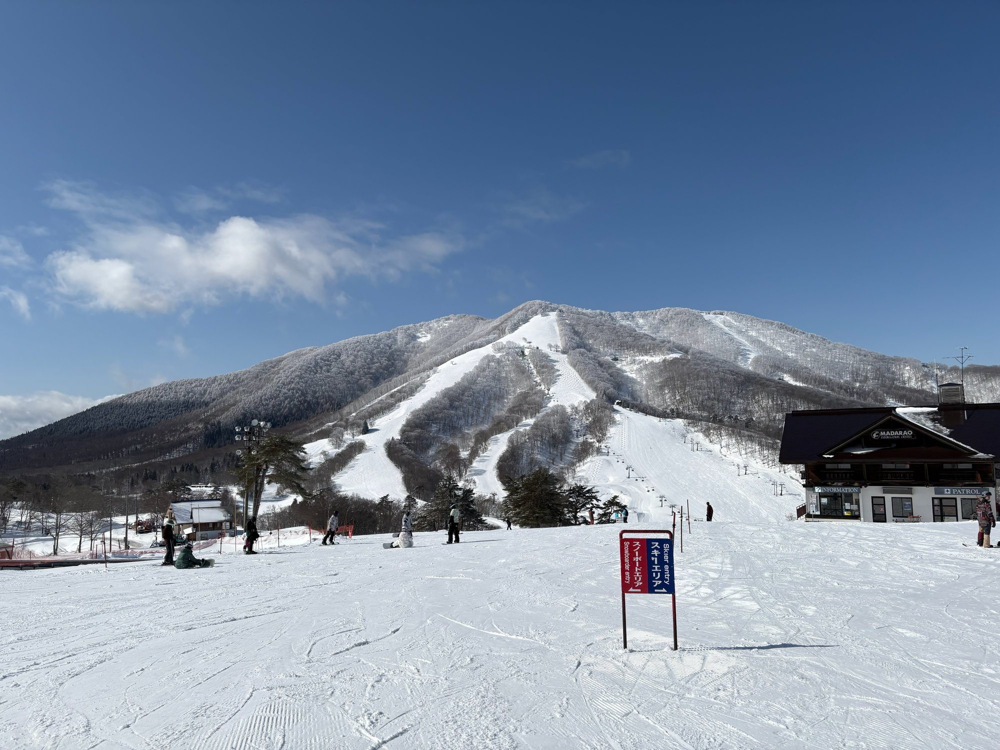

斑尾高原は新潟県と長野県の県境にあるスキー場。その斑尾高原と言ったら何といっても樹々の間を滑るツリーランコース！！！勿論圧雪されていない環境で、樹々の間をさっそうと駆け抜けることで本当の雪山に来たんだと強く感じることができます！！

← 日本地図にもどる斑尾高原は新潟県と長野県の県境にあるスキー場。その斑尾高原と言ったら何といっても樹々の間を滑るツリーランコース！！！勿論圧雪されていない環境で、樹々の間をさっそうと駆け抜けることで本当の雪山に来たんだと強く感じることができます！！